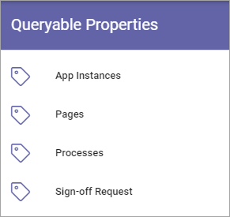

Queryable Properties¶
These lists are available here (image from Omnia 6.13):
In these lists, you add Properties that should be queryable in Omnias database. The Properties are used in the Query Builder, so far in these blocks:
App Instances: In Teamwork Rollup.
Pages: In Page Rollup.
Processes: In Process Rollup.
Sign-off Request: In Sign-off Requests Rollup (available in Omnia 6.13).
To be available here, a property must first be added to Enterprise Properties.
The lists are handled the same way. Here’s part of the list for App Instances as an example:

To remove a Poperty from this list, click the dust bin.
To add a Property, do the folllwing:
Click the plus.
This is then shown:

Select an Enterprise Property in the list and click ADD.
Save when you’re done.